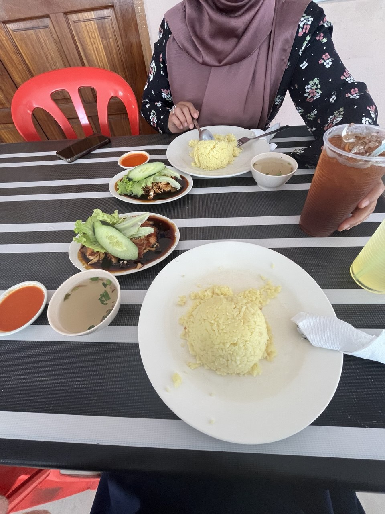
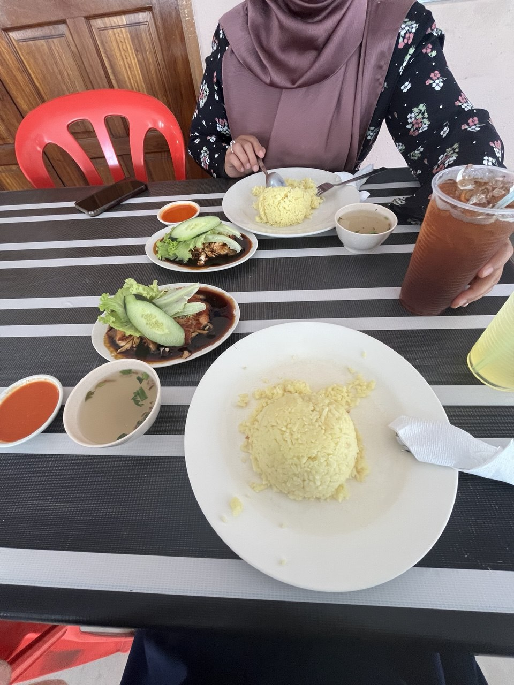

MGWM 🛡️

My Experience ˙ᵕ˙ |
| Internship |
|---|
|
 

| With Manager |
|---|
|


| With Staff |
|---|
|


| With Girls |
|---|
|

“The best part of every experience isn’t just what you learn, but the people and memories you gain along the way.”
| © 2026 Nadia Ameera | Last updated: 10 January 2026 | Created: 2026 |